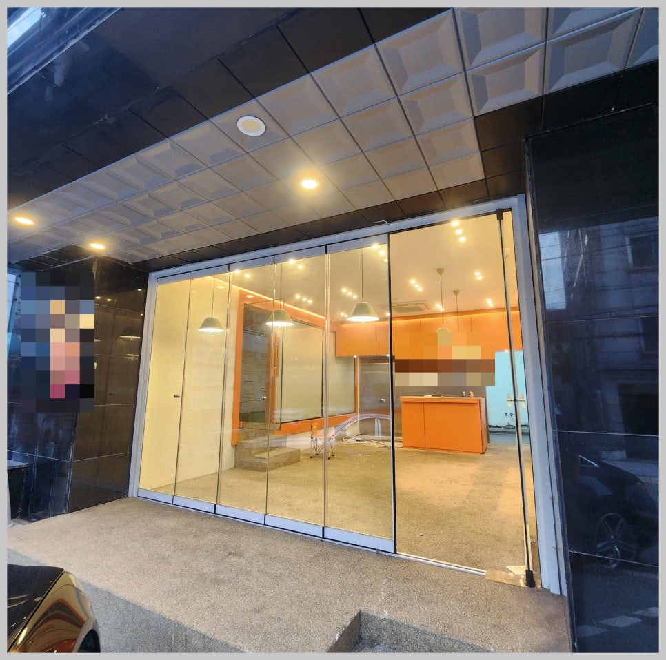
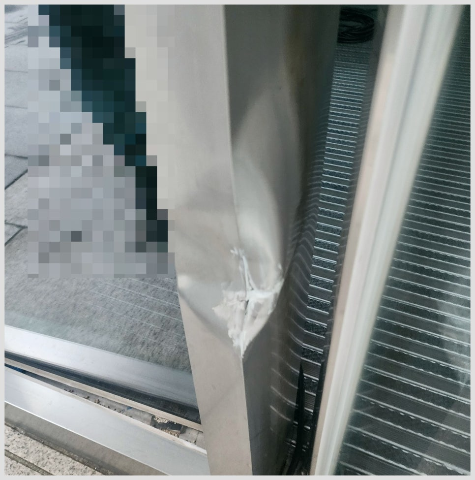
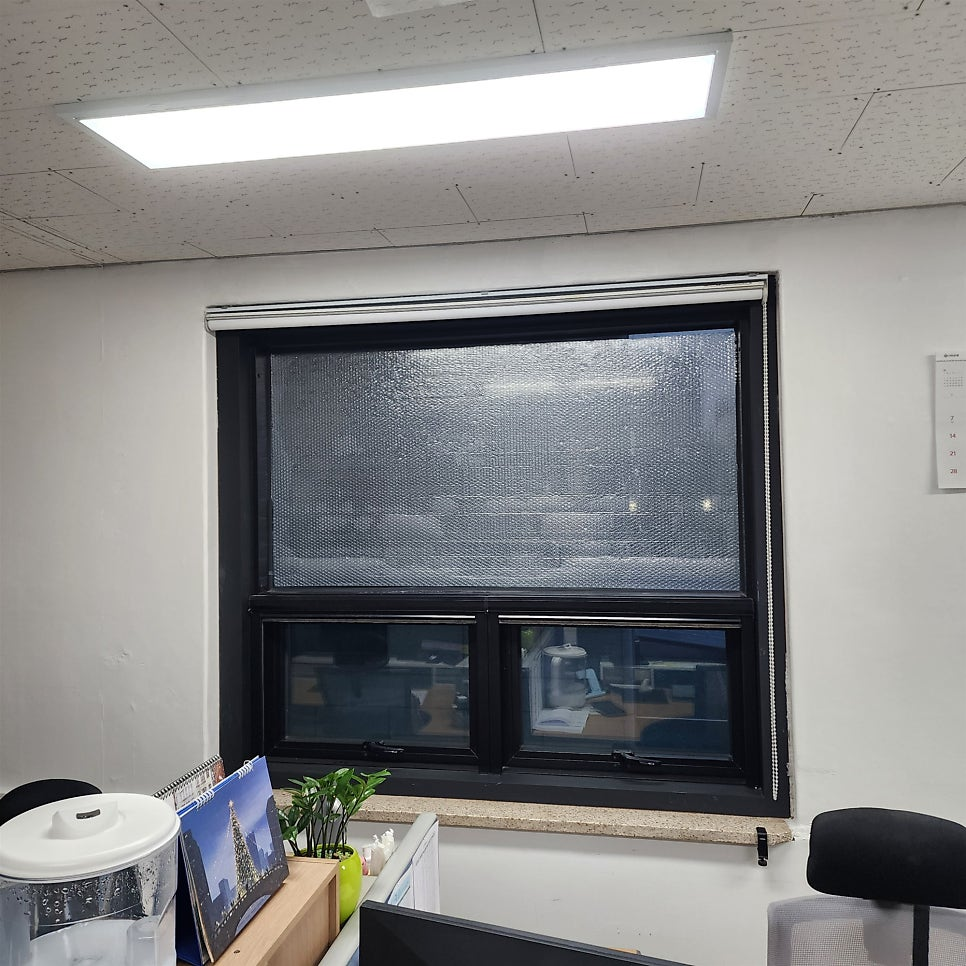
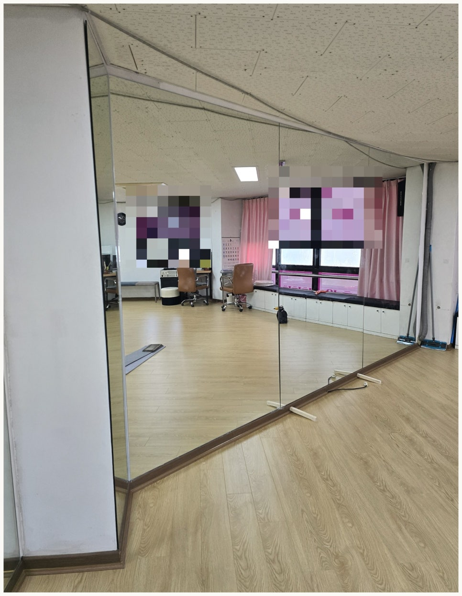
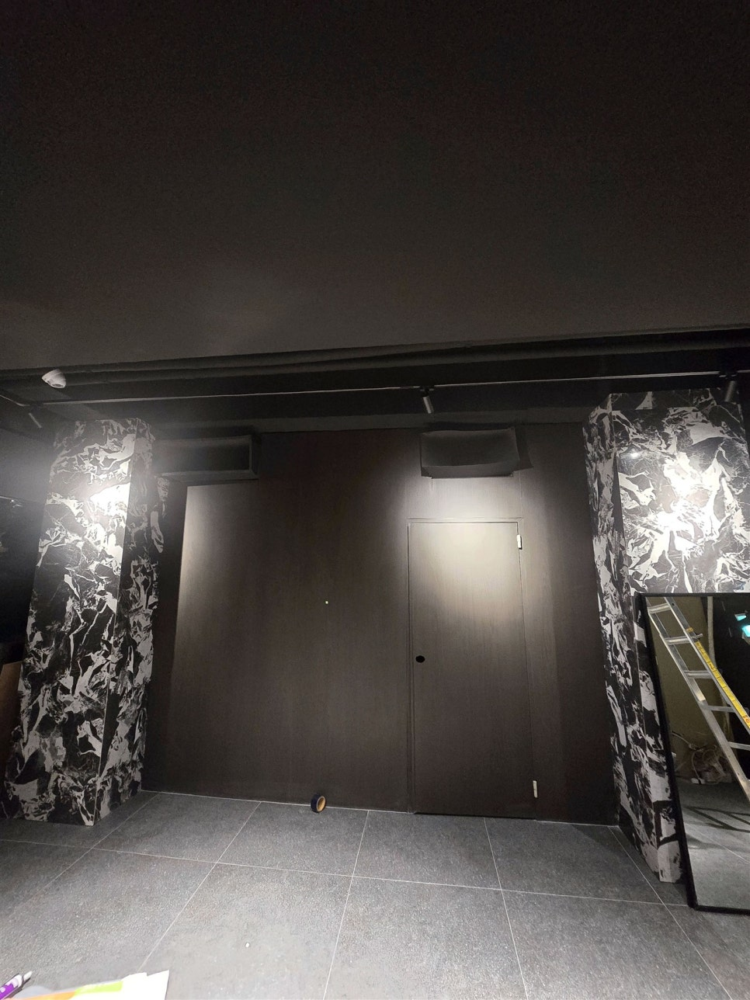
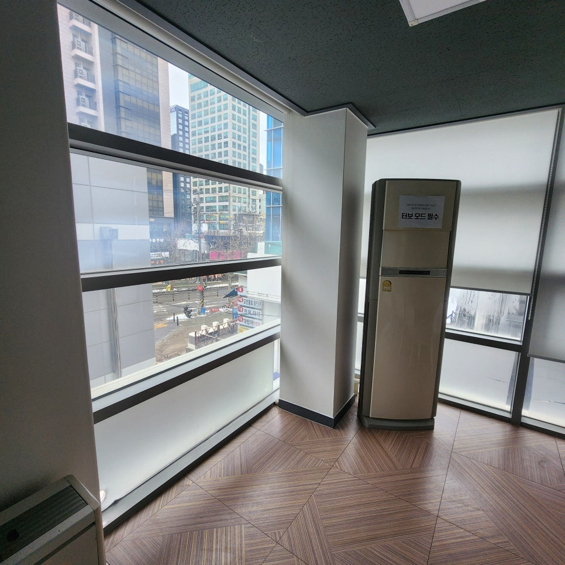
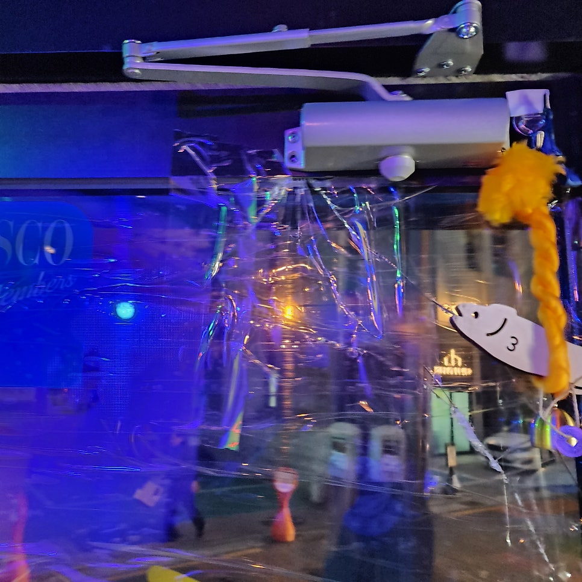
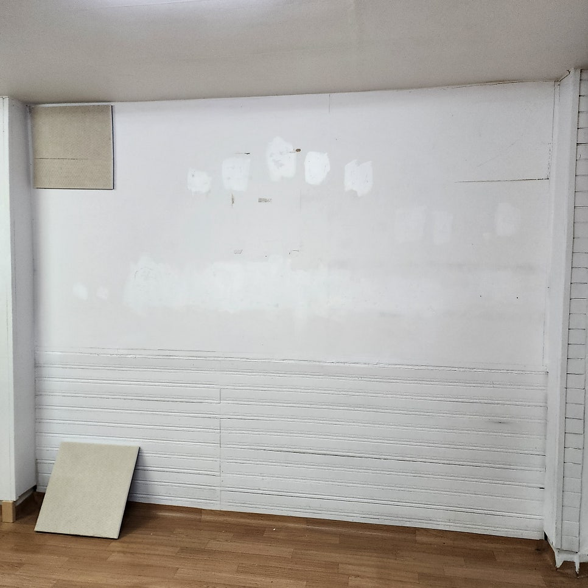
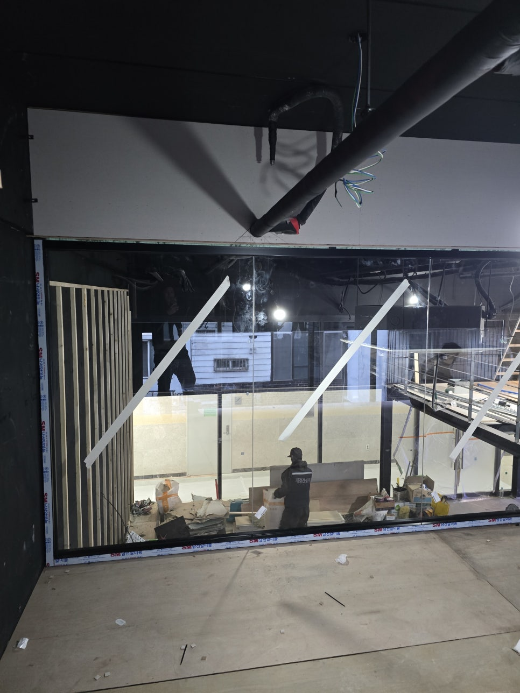

공간을 바꾸는 건
유리 한 장입니다
지금 모습 그대로 사진 한 장이면 충분합니다.
문제가 된 자리와 그 주변이 함께 보이게 찍어 보내 주시면, 어떤 유리로 어떻게 할지와 대략의 비용부터 말씀드립니다. 생산부터 설치까지 청년유리가 직접 합니다.
📞전화 걸기 · 클릭 시 바로 연결010-2965-0924 어떤 시공이 필요한지 모르겠어요지금 상황을 고르면 맞는 시공을 찾아 드립니다→ 견적 전에 무엇을 준비할까요사진 찍는 법, 유리 두께, 거울 가격 계산→
















지금 어떤 상황인가요?
시공 이름을 몰라도 괜찮습니다. 지금 상황을 고르면 맞는 시공과 실제 사례를 보여 드립니다.
최근 시공사례
전체 보기 →서울 강남구 1층 매장 정면을 픽스창으로 바꾼 현장
픽스창은 여닫지 않도록 고정해 둔 유리창을 말합니다. 서울 강남구의 한 1층 상가에서 인테리어 공사 도중, 정면의 접이식 문을 없애고 유리로 바꾸면 비용이 어떻게…

인천 계양구 ㄱ자 업무 책상, 책상 강화유리 두 장 시공
책상 강화유리는 상판이 클수록, 가운데에 구멍이 날수록 두께를 더 신경 써야 합니다. 인천 계양구의 한 사무실에서 상판이 자꾸 긁힌다며, 가운데 박힌 배선함은 계…

송파구 건물 입구 스텐도어 프레임 교체
스텐도어는 스테인리스 틀 안에 유리를 끼운 출입문이라, 틀이 한 번 꺾이면 문짝만 다시 다는 것으로는 해결되지 않는 경우가 많습니다. 서울 송파구의 한 건물은 앞…
강남구 사무실 이중샷시 설치
이중샷시는 기존 창을 철거하지 않고 방 안쪽에 창을 하나 더 세워 창과 창 사이에 공기층을 만드는 방법입니다. 서울 강남구의 한 사무실은 창가 자리가 춥고 바로 …
경기도 광주 운동 학원 벽거울 시공
벽거울 시공은 거울을 몇 장으로, 한 장을 얼마 크기로 나눌지부터 정해야 순서와 견적이 함께 나옵니다. 경기도 광주시의 한 줌바 수업 학원은 한쪽 벽에만 거울이 …
송파구 운동 시설 경사거울 시공
경사거울은 윗부분을 벽에서 띄워 아래쪽을 내려다보게 다는 거울입니다. 송파구 가락동의 한 헬스장에서 기둥 사이 높은 벽에 이렇게 숙인 거울 두 장을 달았습니다. …
어떤 시공을 찾고 계신가요
공종마다 자주 생기는 문제, 작업 방법, 비용이 정해지는 기준과 실제 사례를 정리해 두었습니다.
헬스장, 필라테스, 댄스학원, 미용실, 매장 벽면 대형 전신거울 설치.
시공 51건 →깨진 상가 입구 강화유리문 교체, 가네모·매립·플로어힌지 교체, 강화도어 신설.
시공 13건 →
상가·사무실·병원 유리 자동문 설치와 여닫이문 자동문 교체.
시공 7건 →
사무실 회의실, 복층 공간, 상가 입구 유리파티션과 강화유리 칸막이 설치.
시공 8건 →유리 사이가 뿌옇게 변한 백화현상, 금 간 24T 복층유리·로이유리 교체.
시공 13건 →노후 알루미늄 창호와 하이샷시 교체, PJ(프로젝트) 창 설치, 불투명 유리를 투명 유리로 교체.
시공 9건 →깨진 강화유리 난간·진열장·천장·통유리 교체, 환풍기·배관·덕트 자리 유리 타공.
시공 21건 →가장 많이 받는 질문
질문 전체 보기 →입구 유리문이 깨지면 문 전체를 바꿔야 하나요?
관련 시공사례 보기 →
상가 유리문 교체 비용은 얼마인가요?
관련 시공사례 보기 →
영업 중에도 유리문 교체가 가능한가요?
관련 시공사례 보기 →
전신거울 설치 가격은 어떻게 되나요?
관련 시공사례 보기 →
지하나 계단이 좁은 곳도 대형 거울 설치가 되나요?
관련 시공사례 보기 →
벽이 고르지 않거나 콘센트가 있어도 거울을 붙일 수 있나요?
관련 시공사례 보기 →
양개형 자동문은 꼭 센서로만 열어야 하나요?
관련 시공사례 보기 →
유리 파티션에 출입문도 달 수 있나요? 비용은요?
관련 시공사례 보기 →
창문 유리 사이가 뿌옇게 변했어요. 왜 그런가요?
유리 교체 후 실리콘은 언제 굳나요?
문의
여기서 답을 못 찾으셨다면 편하게 연락 주세요. 문제가 된 자리와 그 주변이 함께 보이는 사진이 있으면 판단이 빠릅니다.
- 전화
- 010-2965-0924 클릭 시 전화로 연결됩니다
- 문자 견적
- 지역·크기 넣어 문자 보내기 →
- 네이버 톡톡
- 사진 보내기 →
- 영업 지역
- 서울특별시 · 경기도 · 인천광역시